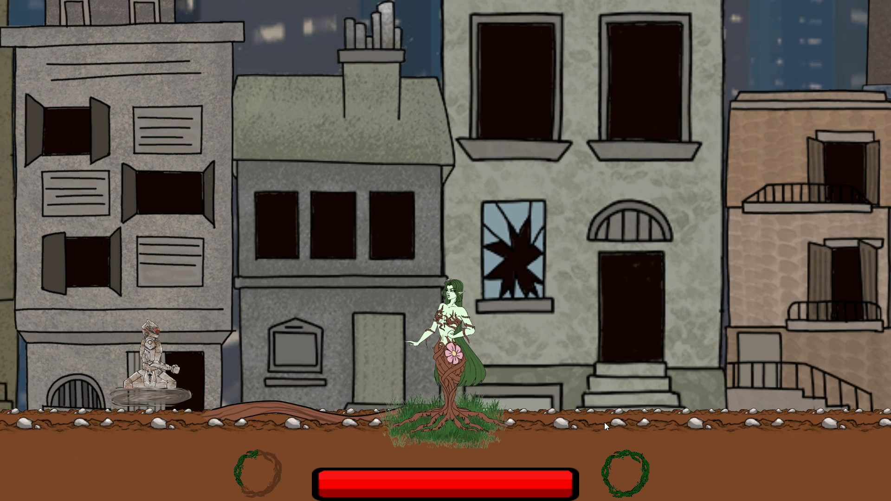
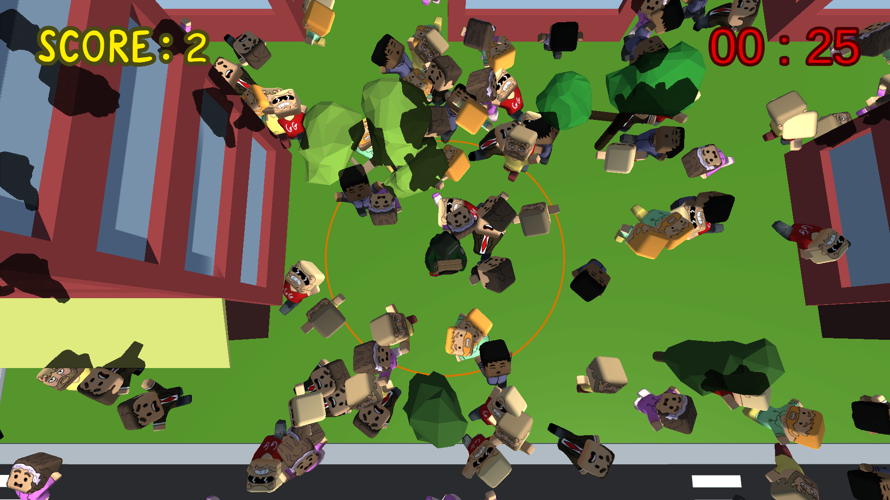
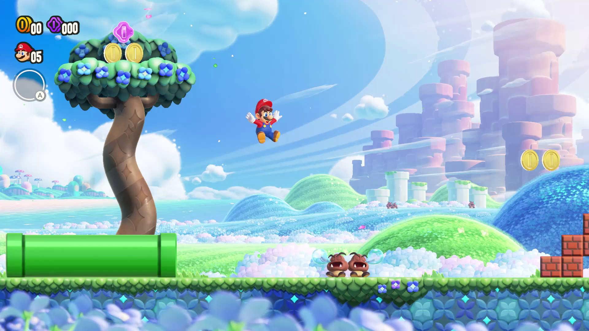
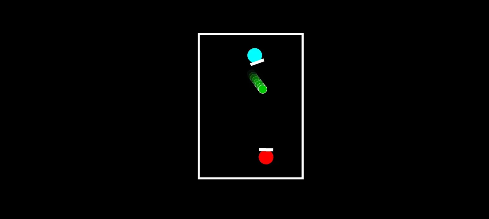
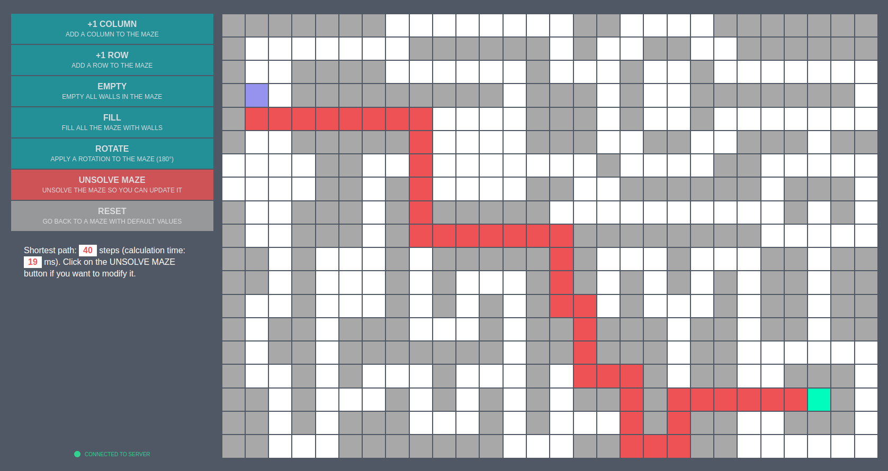
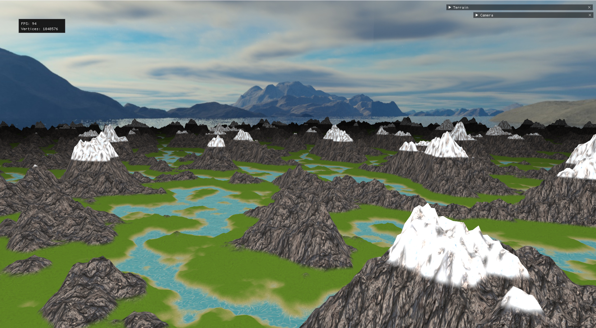
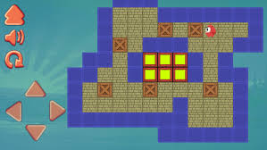
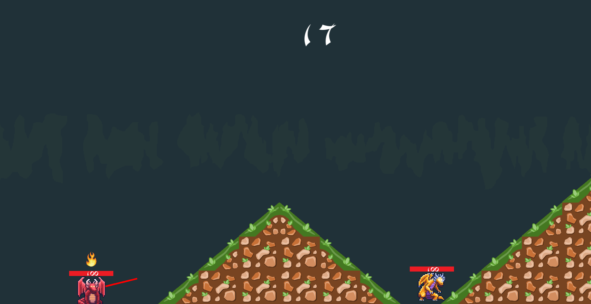
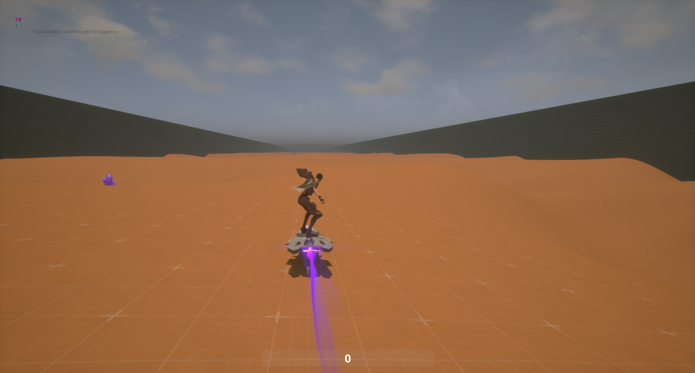

Global Game Jam : Last Hope
Une Game Jam réalisée pendant 48H sous le thème "Root". Ce jeu a été réalisé avec 6 personnes sous Unity.
En tant que programmer j'ai touché à tous les aspects du jeu (Gameplay, Intégration d'animations et d'assets…)

Game Jam Ynov : An Explosive Day
Game Jam académique de 48H sous le thème "Root". Développé à 6 sous Unity.
UI, gestion de l'explosion, de la bombe, de la foule et optimisation des entités.
Projet Final Ynov : Where Are You?
Puzzle game multijoueur réalisé en 1 an, projet de fin de Mastère 5.
Développé sous UE4 avec artistes & game designer. Responsable du multijoueur et du gameplay.

Infinity Platform
Exercice consistant à créer un runner avec des plateformes apparaissant à l'infini.
Réalisé sur Unity en C#.

Projet NetPong
Projet scolaire en groupe de 3. Développement d'un jeu réseau en ligne sans framework, en C++ pur.

Projet Pathfinder
Projet scolaire en groupe de 3. Visualisation interactive de plusieurs algorithmes de pathfinding.

Génération Procédurale
Projet scolaire en groupe de 3. Génération d'une carte 3D via algorithme procédural et OpenGL.

Raycaster
Exercice scolaire : recréer un rendu 3D façon Doom, uniquement avec C++ et SFML. Aucun framework 3D.

Sokoban
Exercice scolaire : développer un Sokoban complet pour apprendre les bases d'Unity et C#.

Worms
Projet scolaire en groupe de 3. Clone de Worms avec physique et système ECS maison, en C++/SFML.

Project Sandboard
Projet personnel en équipe sous Unreal Engine. Jeu de déplacement en désert sur hoverboard.